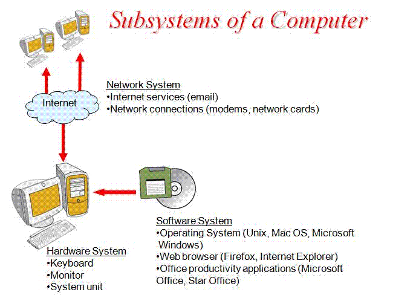

What is the Email component of the Network OS?
 The fifth and final component of the Network OS is the email component. With the network both reaching out to the internal and external intranet. It is shows how the Network OS is evidently shown online and offline. For this particular component, the network OS heavily revolves around the online world. With the power of the email component, it allows the network OS to manage electronic mail also known as email for the entire network. This also includes users accessing the network OS remotely and from the internet. Furthermore, the power of this component cannot be summed from what it can do remotely but simultaneously with other functions such as having two functions run in sync. It can also provide multiple user access which is an integral part for the email component but even an influential effect on the Network OS. This is can be evident as the Network OS is entitled to the power of the email component to block spam and other problematic emails as well as let users create additional email accounts. The email component mainly functions around a groupware environment such as the network OS and is one of the many reasons why the email component is versatile.
How does the Email component help the Network Operating System?
 The email component may sound insignificance and even unimportant to the Network Operating system, however insteads creates a new aspects for users to interact with other users to share and access files. In addition, the email component is the one of the most impactful and dependant components as not only does it significance but also acts as a platform for the other components to work simultaneously with each other.
Furthermore, the main purpose of the email component is to primarily support the function needed of an online world such as the email features. For example, the Email component allows users to access the internet and therefore remotely use the internet. The email component also focuses on the user ability to be entitled to the many features of this component such as creating email accounts and utilize it and its characteristics.
The email component also has the ability to solve simple problems in the network such as block unauthorised emails users from the network. Therefore through all the components and especially the email they all combine to make up the network OS.
The email component may sound insignificance and even unimportant to the Network Operating system, however insteads creates a new aspects for users to interact with other users to share and access files. In addition, the email component is the one of the most impactful and dependant components as not only does it significance but also acts as a platform for the other components to work simultaneously with each other.
Furthermore, the main purpose of the email component is to primarily support the function needed of an online world such as the email features. For example, the Email component allows users to access the internet and therefore remotely use the internet. The email component also focuses on the user ability to be entitled to the many features of this component such as creating email accounts and utilize it and its characteristics.
The email component also has the ability to solve simple problems in the network such as block unauthorised emails users from the network. Therefore through all the components and especially the email they all combine to make up the network OS.